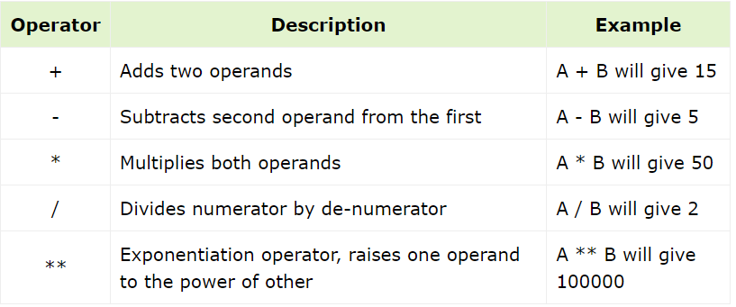
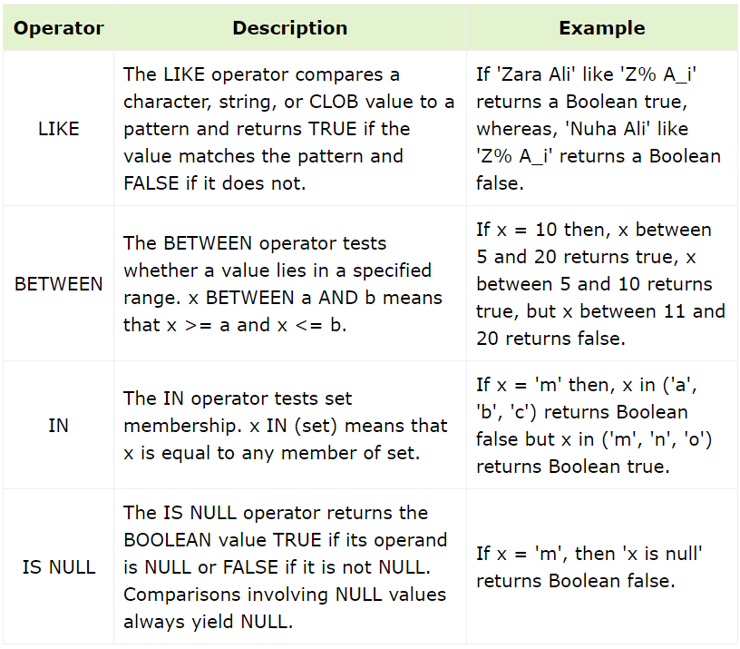
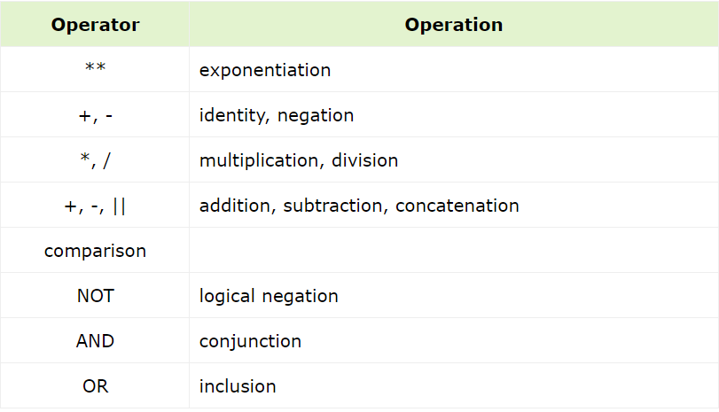

An operator is a symbol that tells the compiler to perform specific mathematical or logical manipulation.
PL/SQL language is rich in built-in operators and provides the following types of operators
Following table shows all the arithmetic operators supported by PL/SQL. Let us assume variable A holds 10 and variable B holds 5, then:
Relational operators compare two expressions or values and return a Boolean result. Following table shows all the relational operators supported by PL/SQL.
Let us assume variable A holds 10 and variable B holds 20, then:
Comparison operators are used for comparing one expression to another. The result is always either TRUE, FALSE or NULL.
Following table shows the Logical operators supported by PL/SQL. All these operators work on Boolean operands and
produce Boolean results. Let us assume variable A holds true and variable B holds false, then :
Operator precedence determines the grouping of terms in an expression. This affects how an expression is evaluated.
Certain operators have higher precedence than others;
for example, the multiplication operator has higher precedence than the addition operator.
For example, x = 7 + 3 * 2; here, x is assigned 13, not 20 because operator * has higher precedence than +, so it first gets multiplied with 3*2 and then adds into 7.
Here, operators with the highest precedence appear at the top of the table, those with the lowest appear at the bottom.
Within an expression, higher precedence operators will be evaluated first.
The precedence of operators goes as follows: =, <, >, <=, >=, <>, !=, ~=, ^=, IS NULL, LIKE, BETWEEN, IN.
